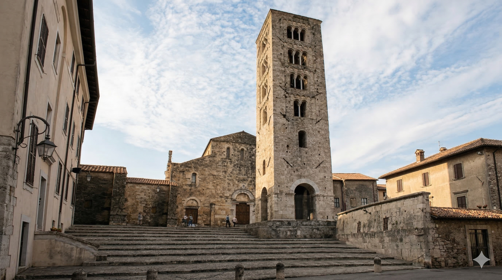
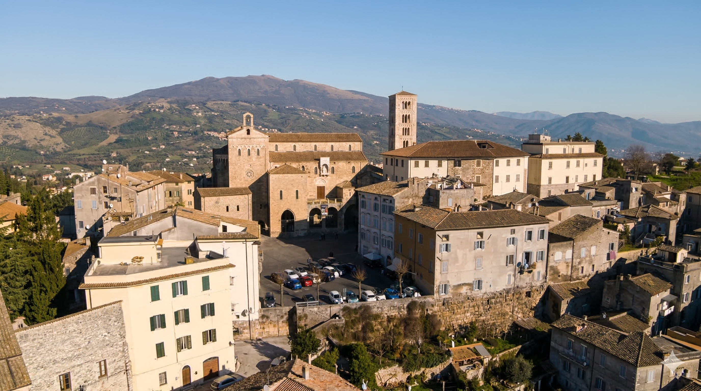
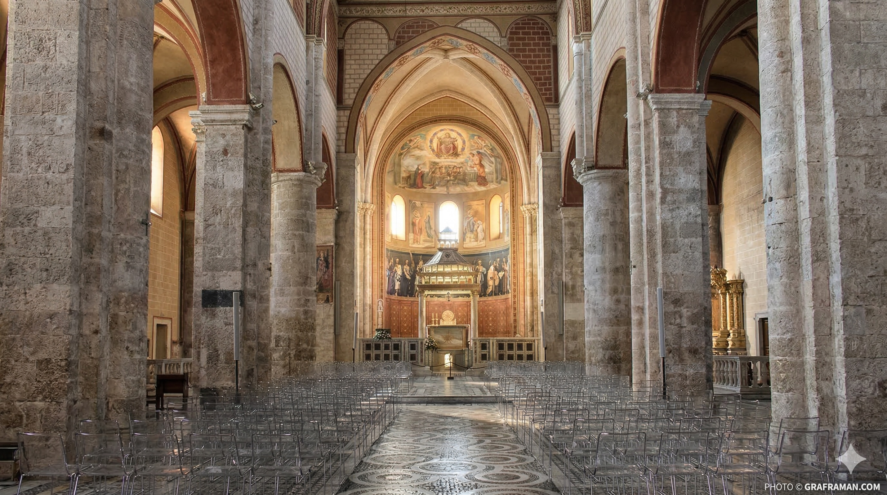
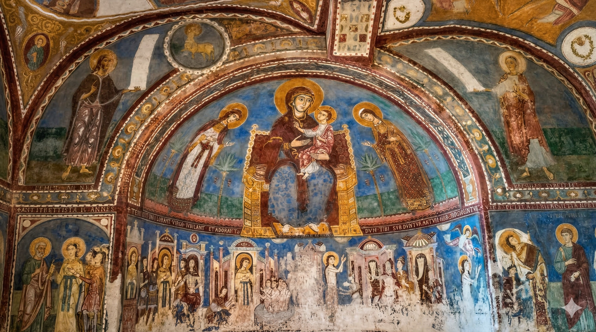
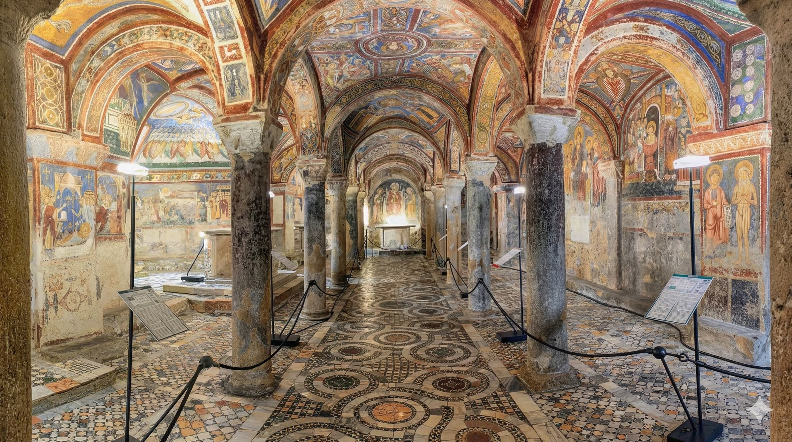

✕
❮
❯





A Catedral de Anagni foi construída entre os séculos XI e XII durante um período de grande influência papal na região. O edifício apresenta características da arquitetura românica italiana, com elementos decorativos e esculturas típicas da arte medieval.
Durante a Idade Média, Anagni tornou-se conhecida como a “cidade dos papas”, pois vários pontífices nasceram ou viveram na região.
Curiosidade histórica:
A cripta da Catedral de Anagni é famosa por seus afrescos do século XIII e é frequentemente chamada de “Capela Sistina da Idade Média”.
Cultura pop:
A arte medieval europeia aparece em filmes históricos ambientados nesse período, como "The Name of the Rose" (1986), estrelado por Sean Connery.